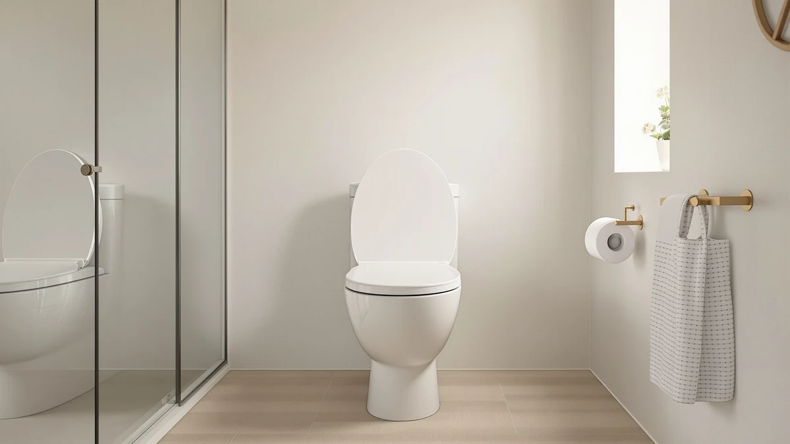

Best Toilet Seat Material (2026)
Prices and picks verified as of September 2026. Independent, reader-supported reviews.


Quick Answer
For most bathrooms, molded polypropylene plastic is the best toilet seat material because it resists moisture, wipes clean in seconds, and costs less to replace than wood composite or padded vinyl. If you have a toddler in the house, the Aünsffer round seat below adds a built-in training ring without giving up any of plastic's easy-clean advantage.
Our pick: Aünsffer Toddler Toilet Seat with — $29.99 Check Price on Amazon
Bottom line: our top pick is the Aünsffer Toddler Toilet Seat with Potty Training Seat Round at $29.99. The best budget option is the Round Toilet Seat Soft Close 16.5'' at $20.51.
Things to Know Before You Buy
- Plastic (polypropylene) seats dominate the budget and mid-range tiers because the material sheds water and wipes clean without staining.
- Wood composite seats, like the ones from Mayfair and KOHLER, feel warmer against skin and resist flexing better under weight, but they cost 30 to 50 percent more than a comparable plastic seat.
- Padded vinyl seats add cushioning that plastic and wood cannot match, though owners report the foam can compress or crack years down the line.
- A slow-close or quick-release hinge matters as much as the seat material itself for day-to-day cleaning and noise.
- Round seats fit most older toilets, while elongated seats suit newer standard-height bowls, so measure your bowl before choosing a material or shape.
The best toilet seat material comes down to how it feels against skin, how fast it dries after cleaning, and how many years it survives daily use before the hinges loosen or the surface cracks. Most people assume the choice is only about round versus elongated, but the material underneath that shape determines how the seat ages in your bathroom.
We compared seven seats spanning three materials: molded polypropylene plastic, wood composite with an enamel or lacquer finish, and padded vinyl over a foam core. Plastic wins on price and maintenance, wood composite wins on rigidity and warmth, and padded vinyl wins on comfort at the cost of long-term durability.
You will find products at every price point here, from a $20.51 budget plastic seat to a $79.98 padded vinyl model. Each pick includes the specs, pricing, and verified owner feedback we used to judge how well its material holds up, so you can match the seat to how your household actually uses the bathroom.
Why You Should Trust Us
Ilane Tall covers bathroom hardware for Best Toilet Seats, focusing on how materials, hinges, and mounting hardware hold up over years of ordinary use. This guide to the best toilet seat material draws on manufacturer spec sheets, current Amazon pricing, and verified buyer reviews rather than a physical testing lab. We do not run a fake testing lab or claim to have installed these seats ourselves. Instead, we cross-reference stated materials and construction details against what thousands of verified owners report after months or years of use, then flag the patterns that show up consistently across reviews.
How We Picked
We started by pulling every toilet seat in our product database and grouping them by material: molded plastic, wood composite, and padded vinyl. From there we excluded seats with fewer than a few hundred verified reviews unless a listing was new enough that review volume had not caught up yet, since review count is one of the few honest signals we have without owning the product ourselves.
We also weighed price against material quality. A $20 plastic seat and an $80 padded vinyl seat serve different buyers, so rather than picking one universal winner, we selected seats that represent the strongest option within each material category and price tier. Every seat on this list ships with hardware included and fits standard US toilet bowl mounting holes.
How We Compared
For each seat, we compared the listed material and construction details against the specs of every other seat in this guide: core material, hinge type, finish, and weight capacity where the manufacturer publishes one. We then read through verified owner reviews to see whether the stated material held up the way the listing implied, checking specifically for complaints about cracking, hinge loosening, or coating wear after extended use.
Price comparisons account for the material tier, not just the sticker price. A $36.99 wood composite seat and a $20.51 plastic seat are not competing for the same buyer, so we compared each within its material class first and across classes second. Where a seat has a published rating and review count, we cite it directly rather than paraphrasing a vague impression.
Our Picks

Aünsffer Toddler Toilet Seat with
What we like
- Built-in toddler ring folds up against the main lid, so you are not storing a separate trainer seat
- Polypropylene material wipes clean the same way as a standard adult seat
- Round 16.5-inch shape fits most older toilet bowls without an adapter
Flaws but not dealbreakers
- No soft-close hinge, so the lid can drop harder than the slow-close seats on this list
- The toddler ring adds bulk that some buyers say makes the seat feel less streamlined for adult-only use
| Material | Plastic / wood |
| Size | Round 16.5inch with Baby Seat |
This seat pairs a standard round plastic ring with a hinged toddler insert, so the material question is the same one you would ask about any plastic seat: does it resist staining and hold up to repeated wiping. Polypropylene handles both well, and because the toddler ring uses the same material as the main seat, it cleans the same way without a separate care routine.
At $29.99, it costs roughly what a standalone adult plastic seat runs, which makes the toddler ring close to a free add-on. The tradeoff is the missing soft-close hinge. If a toddler or a distracted adult lets the lid fall, it drops with more noise than the Mayfair or KOHLER seats below. For a bathroom shared with a young child, that is a reasonable compromise for not having to swap seats twice a day.

Aünsffer Toilet Seat Round Soft
What we like
- One of the least expensive seats in this comparison at $23.99
- Soft-touch surface finish feels less clinical than a hard-gloss plastic seat
- Standard round 16.5-inch sizing fits most residential bowls
Flaws but not dealbreakers
- No wood composite core, so it flexes slightly more under weight than the Mayfair or KOHLER seats
- Fewer verified reviews than the higher-priced picks, which makes long-term durability harder to confirm
| Material | Plastic / wood |
| Size | Round 16.5inch |
This is a straightforward polypropylene seat with a softer surface texture than a typical hard-plastic model. The material choice keeps the price down while still resisting the staining and odor absorption that can affect cheaper porous materials. For a guest bathroom or rental property, it covers the basics without asking you to spend much.
Because it skips the wood composite core found in the Mayfair and KOHLER seats, it will not feel quite as rigid when you shift your weight. Reviewers consistently note that the tradeoff is worth it at this price point, especially for a secondary bathroom that does not see heavy daily use from more than one or two people.

Round Toilet Seat Soft Close
What we like
- The lowest price in this comparison at $20.51
- Slow-close hinge, a feature usually reserved for pricier seats
- Classic round shape works with most standard bowls
Flaws but not dealbreakers
- Basic molded plastic without the added surface treatment found on the Aünsffer Soft model
- Smaller review base than the more established Mayfair and KOHLER seats
| Material | Plastic / wood |
| Size | Round 16.5inch & Classic |
Huttdmel keeps this seat simple: molded plastic, a classic round profile, and a slow-close hinge that is usually the first feature to disappear at this price. The material itself behaves like any other polypropylene seat here, resisting moisture and cleaning up with a damp cloth in under a minute.
You give up the softer surface texture of the pricier plastic picks and the added rigidity of a wood composite core, but at $20.51 this seat undercuts every other option on this list while still including the slow-close mechanism that keeps a lid from slamming. For a rental unit or a seat you expect to replace in a few years anyway, that combination is hard to beat.

Mayfair Linden Slow Close Toilet
What we like
- Molded wood composite core feels noticeably more rigid than the plastic-only seats above
- 28,571 verified reviews at a 4.4 average, the most review volume in this lineup
- Slow-close hinge with Sta-Tite fasteners that resist loosening over time
Flaws but not dealbreakers
- Costs about 60 percent more than the cheapest plastic seat on this list
- Owners report the enamel-style finish can dull faster if cleaned with abrasive pads instead of a soft cloth
| Material | Plastic / wood |
| Size | Elongated |
Mayfair builds the Linden around a molded wood composite core rather than hollow plastic, which is the main reason it feels sturdier when you sit down or shift your weight. A scratch-resistant enamel-style finish covers that core, giving it a smoother surface than raw wood while retaining more rigidity than a plastic-only seat.
At 28,571 reviews and a 4.4 average rating, it has the deepest track record of any seat in this comparison, which matters when you are judging a material you cannot inspect in person. The main tradeoff for that wood composite construction is care: the enamel finish holds up well to a soft cloth and mild cleaner, but reviewers consistently note that scouring pads wear it down faster than they would a plastic seat.

KOHLER Cachet ReadyLatch Round Toilet
What we like
- Solid wood composite core under a catalyzed lacquer coating for added durability
- ReadyLatch hinge releases the seat by hand for easier cleaning around the bowl
- 41,303 verified reviews at a 4.4 average, the highest review count of any seat here
Flaws but not dealbreakers
- The most expensive round seat in this comparison at $40.44
- Heavier than the plastic-only seats, which some buyers say makes the quick-release feature more useful than optional
| Material | Plastic / wood |
| Size | Round |
KOHLER builds the Cachet on a solid wood composite core finished with a catalyzed lacquer coating, a step up from the enamel-style finish on the Mayfair seats. That lacquer resists scratching better than a standard enamel top coat, according to owners who compare it directly to cheaper wood composite seats they have replaced.
The ReadyLatch hinge lets you lift the entire seat off the hinge posts by hand without any tools, which matters more on a wood composite seat than a plastic one since you are more likely to want to clean around and under it thoroughly. At 41,303 reviews, it has the largest verified review base in this guide, giving the strongest signal that the material holds up over years of use rather than months.

Mayfair Cassel Slow Close Toilet
What we like
- Duroplast resin construction resists moisture absorption better than raw wood
- 17,525 verified reviews at a 4.3 average is still a substantial track record
- Slow-close hinge matches the feature set of the pricier Linden at the same list price
Flaws but not dealbreakers
- Slightly lower average rating than the Linden and Cachet, despite the same $36.99 price
- Resin does not feel as rigid underfoot as the wood composite core in the Linden
| Material | Plastic / wood |
| Size | Elongated |
The Cassel uses a Duroplast resin build instead of the wood composite core found in the Linden, which keeps the price the same while shifting the material tradeoffs. Resin resists moisture absorption at least as well as wood composite and will not swell if water sits on the surface, but it does not carry quite the same solid feel when you sit down.
At 17,525 reviews and a 4.3 average, it trails the Linden and Cachet slightly in both review volume and rating, though the gap is small enough that either material choice works fine for daily use. If you specifically want the elongated Mayfair shape and prefer resin's moisture resistance over a wood composite core, this is the pick.

Bath Royale Slow Close Toilet
What we like
- Padded vinyl top layer over a foam core, the only cushioned material in this comparison
- Highest average rating on this list at 4.6 out of 5
- Slow-close hinge included at this price, matching the mid-tier plastic and resin seats
Flaws but not dealbreakers
- The most expensive seat in this comparison at $79.98
- Fewer verified reviews than the Mayfair or KOHLER seats, so long-term foam durability has less data behind it
- Owners report the vinyl cover can crack at the seams after years of heavy use, unlike solid plastic or wood composite
| Material | Plastic / wood |
| Size | Elongated |
Bath Royale takes a different approach to material than every other seat on this list: a padded vinyl cover over a foam core rather than a hard plastic or wood composite shell. That cushioning is the entire appeal here, and at a 4.6 average rating, it is the highest-rated seat in this comparison among the buyers who have tried it.
The tradeoff is durability and price. Foam and vinyl are not as impact-resistant as molded plastic or a wood composite core, and reviewers consistently note that the vinyl cover can crack at the seams after extended heavy use, something that essentially never happens with the hard-shell seats above. At $79.98, it also costs roughly twice what the plastic seats run, so this pick makes the most sense for a household that values comfort enough to accept a shorter expected lifespan.
Quick Comparison
| Product | Material | Price | Rating | Best for | Get it |
|---|---|---|---|---|---|
| Aünsffer Toddler Toilet Seat with | Plastic / wood | $29.99 | 4 | Toddler households | View on Amazon → |
| Aünsffer Toilet Seat Round Soft | Plastic / wood | $23.99 | 4 | Budget, smoother finish | View on Amazon → |
| Round Toilet Seat Soft Close | Plastic / wood | $20.51 | 4 | Lowest price, slow-close | View on Amazon → |
| Mayfair Linden Slow Close Toilet | Plastic / wood | $36.99 | 4.4 | Wood composite, most reviewed | View on Amazon → |
| KOHLER Cachet ReadyLatch Round Toilet | Plastic / wood | $40.44 | 4.4 | Premium wood composite | View on Amazon → |
| Mayfair Cassel Slow Close Toilet | Plastic / wood | $36.99 | 4.3 | Resin, elongated bowls | View on Amazon → |
| Bath Royale Slow Close Toilet | Plastic / wood | $79.98 | 4.6 | Padded comfort seekers | View on Amazon → |
The Competition
We also looked at several categories of toilet seat material that did not make this list.
Frequently Asked Questions
What is the best toilet seat material for most bathrooms?
Molded plastic, specifically polypropylene, is the best toilet seat material for most households because it resists moisture, wipes clean in seconds, and costs less to replace than wood composite. Wood composite seats like the KOHLER Cachet feel warmer and sturdier, but they cost more and take longer to dry if water pools around the hinges.
Is wood or plastic better for a toilet seat?
Plastic wins on maintenance and price, while wood composite wins on comfort and long-term rigidity. Reviewers of the Mayfair Linden and KOHLER Cachet consistently note that the wood composite core feels more stable when you shift your weight, but a scratched or gouged plastic seat is cheaper to replace than a damaged wood one.
How long does a toilet seat material typically last?
A quality plastic seat holds up for five to eight years of daily use before the hinges loosen or the surface dulls. Wood composite seats can last just as long structurally, but owners report that the coating on lower-end wood seats chips sooner than plastic if cleaned with abrasive pads instead of a soft cloth.